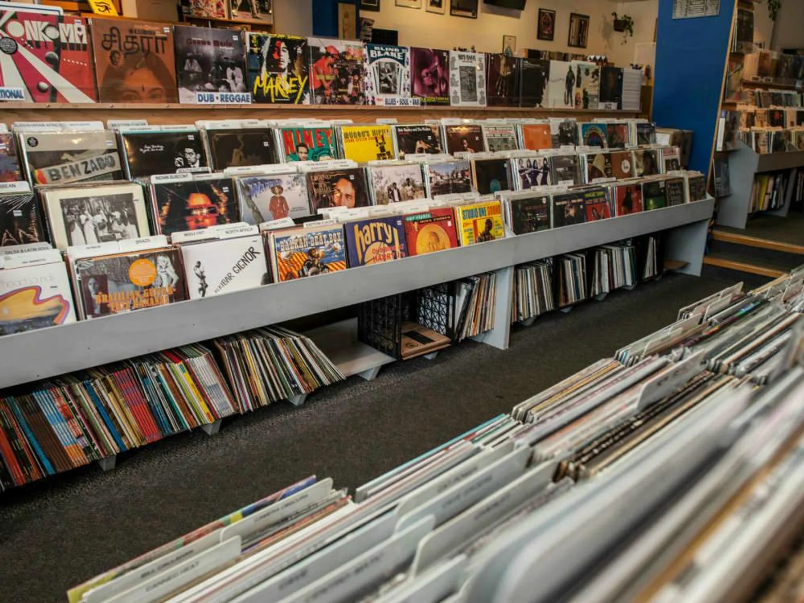
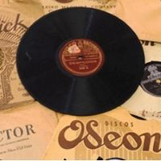
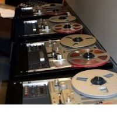
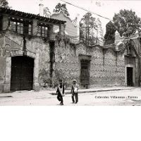

Bienvenido a La Fonoteca
La Fonoteca realiza una tarea de rescate y revaloración del patrimonio histórico, para poner a disposición de nuestros radioescuchas el acervo sonoro.
Quienes somos
Somos un grupo que se dedica a preservar y compartir la magia de la musica, de conectar con personas que comparten nuestros gustos y descubrir nuevas canciones que pueden emocionarnos y conmovernos. Es una manera de inmortalizar en la web esos momentos especiales en que una cancion nos transporta a un lugar, a un recuerdo, a un sentimiento. Esto es un homenaje a las melodias que han acompañado nuestra vida y nuestras emociones en cada momento.
Los invitamos a nuestro catalogo sonoro para conocer los mejores discos de la historia, ademas de poder disfrutar de estos clasicos tenes la posibilidad de llevarte las promos en vigencia, y vas a tener disponible nuestra biblioteca para conocer mas en profundidad los comienzos de este maravilloso mundo de la musica en discos de pasta.
Historia
El vocablo "Fonoteca" fue introducido por Gabriel Timmory para la Fonoteca Nacional Francesa en 1932. Viene de las raices griegas fone (sonido) theke (caja)
Nuestra fonoteca se encarga de la investigacion, registro, conservacion y difusion del patrimonio sonoro, brindamos informacion y ademas tenemos a la venta los mejores clasicos de la historia, dejanos tus datos en contacto y nos comunicamos con vos.
Te compartimos sitios donde tambien podes recopilar informacion valiosa relacionada a nuestro patrimonio musical: Click aqui
-
Fonoteca
Argentina
1998
-
Fonoteca
Memoria sonora
Cinematografica
-
Fonoteca
Buenos Aires
1902
En "La Fonoteca" nos dedicamos a la venta de discos internacionacionales, pero el amor por los clasicos siempre esta, por eso elegimos este video para compartir del famoso cantante Carlos Gardel.